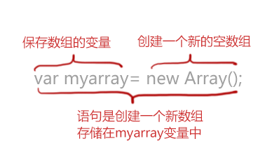
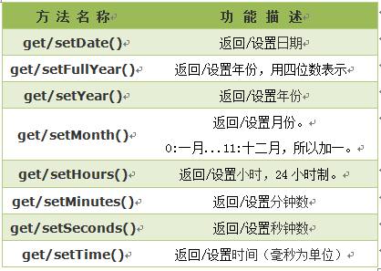
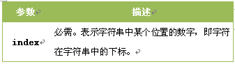
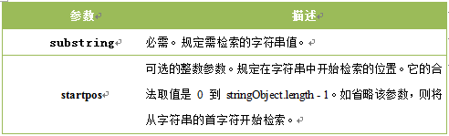
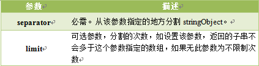
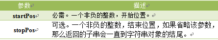
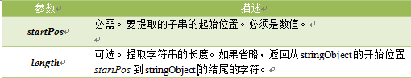
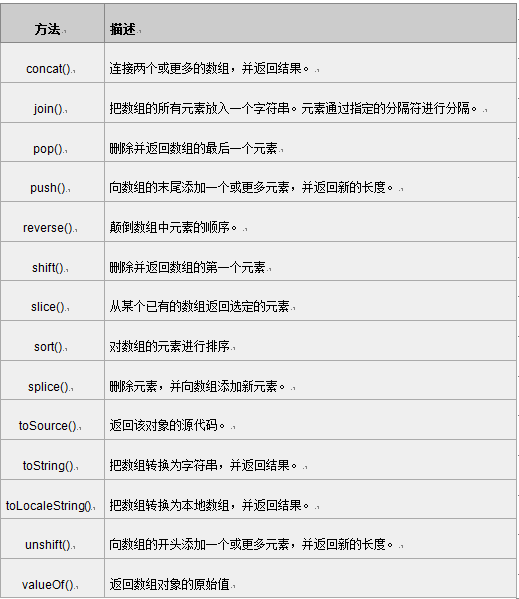
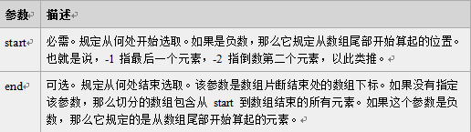
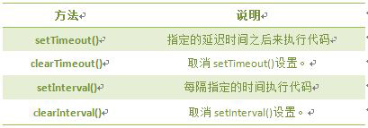

Javascript
书写格式
放在script里
<script> Javascript代码 </script>
js基础语法
声明变量
var 变量名；
变量赋值
第一种方法：var 变量名 = 值; 第二种方法：var 变量名；变量名 = 值;
表达式
var 变量名 = 值 +-*/ 值;
多值输出
document.write("字段"+变量名);
自变量
值--; 值++;
比较操作符
< 小于 > 大于 <= 小于或等于 >= 大于或等于 == 等于 != 不等于 返回值：真(true) 假(false)
逻辑操作符
b>a && b<c //“&&”是并且的意思, 读法"b大于a"并且" b小于c " b>a ||a>b //"||"是或这的意思，读法"b大于a"或者"a大于b" !(b>a) //"!"是真即假，假即真的意思
操作符优先级
算术操作符→比较操作符→逻辑操作符→“=”赋值符号
数组
数组是一个值的集合，每个值都有一个索引号，从0开始，每个索引都有一个相应的值，根据需要添加更多数值。
创建数组语法：
var myarr=new Array(数量); //定义数组 myarr[0]=80; //给第一个数组赋值（重复一个一个赋值） var myarr=new Array(值,值,值,值); //创建数组同时多个赋值 var myarray = [值,值,值,值]; //直接输入一个数组 
使用数组元素
myarray[0]
数组属性length
myarray.length; //获得数组myarray的长度 myarray.length=10; //length属性是可变的 数组随元素的增加，长度也会改变
二维数组
二维数组的表示: myarray[ ][ ]
流程控制语句
做判断（if语句）
语法：
if(条件)
{ 条件成立时执行代码}
二选一（if...else语句）
语法：
if(条件)
{ 条件成立时执行的代码}
else
{条件不成立时执行的代码}
多重判断（if...else嵌套语句）
语法：
if(条件1)
{ 条件1成立时执行的代码}
else if(条件2)
{ 条件2成立时执行的代码}
...
else if(条件n)
{ 条件n成立时执行的代码}
else
{ 条件1、2至n不成立时执行的代码}
多种选择（Switch语句）
语法：
switch(表达式)
{
case值1:
执行代码块 1
break;
case值2:
执行代码块 2
break;
...
case值n:
执行代码块 n
break;
default:
与 case值1 、 case值2...case值n 不同时执行的代码
}
Switch必须赋初始值，值与每个case值匹配。
满足执行该 case 后的所有语句，并用break语句来阻止运行下一个case。
如所有case值都不匹配，执行default后的语句。
重复重复（for循环）
for语句结构：
for(初始化变量;循环条件;循环迭代)
{
循环语句
}
反反复复(while循环)
while语句结构：
while(判断条件)
{
循环语句
}
来来回回(Do...while循环)
do...while语句结构：
do
{
循环语句
}
while(判断条件)
退出循环break
格式如下：
for(初始条件;判断条件;循环后条件值更新)
{
if(特殊情况)
{ break; } //如果特殊情况成立，退出循环
循环代码
}
继续循环continue
语句结构：
for(初始条件;判断条件;循环后条件值更新)
{
if(特殊情况)
{ continue; } //当特殊情况成立，本次循环被跳过，继续执行后面
循环代码
}
函数
函数的作用，可以写一次代码，然后反复地重用这个代码。
定义函数
格式如下：
function 函数名( )
{
函数体;
}
函数调用
情况如下：
第一种：函数名(); //调用函数，直接写函数名。 第二种：<input type="button" onclick="函数名()"> //按钮,onclick点击事件，直接写函数名
有参数的函数
格式如下：
function 函数名(参数1,参数2)
{
函数代码
}
注意:参数可以多个，根据需要增减参数个数。参数之间用(逗号，）隔开。
function add2(x,y)
{
sum = x + y;
document.write(sum);
}
返回值的函数
格式如下：
function add2(x,y)
{
sum = x + y;
return sum; //返回函数值,return后面的值叫做返回值。
}
还可以通过变量存储调用函数的返回值：
result = add2(3,4); //语句执行后,result变量中的值为7。
事件响应，让网页交互
主要事件表：

鼠标单击事件( onclick ）
<input name="button" type="button" value="点击提交" onclick="函数名()" />
鼠标经过事件（onmouseover）
<input name="确定" type="button" value="确定" onmouseover="函数名()"/>
鼠标移开事件（onmouseout）
<input name="确定" type="button" value="确定" onmouseout="函数名()"/>
光标聚焦事件（onfocus）
当网页中的对象获得聚点时，执行onfocus调用的程序就会被执行。
<input name="username" type="text" value="请输入姓名" onfocus="函数名()">
失焦事件（onblur）
当光标离开当前获得聚焦对象的时候，触发onblur事件
<input name="username" type="text" value="请输入用户名！" onblur="函数名()" >
内容选中事件（onselect）
选中事件，当文本框或者文本域中的文字被选中时，触发onselect事件，同时调用的程序就会被执行。
<textarea name="summary" cols="60" rows="5"onselect="函数名()">请写入内容！</textarea>
文本框内容改变事件（onchange）
通过改变文本框的内容来触发onchange事件，同时执行被调用的程序。
<textarea name="summary" cols="60" rows="5" onchange="函数名()">请写入内容！</textarea>
加载事件（onload）
事件会在页面加载完成后，立即发生，同时执行被调用的程序。
注意：
1. 加载页面时，触发onload事件，事件写在
标签内。2. 此节的加载页面，可理解为打开一个新页面时。
<body onload="函数名()">
卸载事件（onunload）
当用户退出页面时（页面关闭、页面刷新等），触发onUnload事件，同时执行被调用的程序。
注意：不同浏览器对onunload事件支持不同。
window.onunload = onunload_message;
function onunload_message(){
alert("您确定离开该网页吗？");
}
js内置对象
js中的所有事物都是对象，如:字符串、数值、数组、函数等，每个对象带有属性和方法。
对象的属性：反映该对象某些特定的性质的，如：字符串的长度、图像的长宽等；
对象的方法：能够在对象上执行的动作。例如，表单的“提交”(Submit)，时间的“获取”(getYear)等；
访问对象属性的语法：
objectName.propertyName
访问对象的语法：
objectName.methodName()
访问对象的方法：
objectName.methodName()
Date 日期对象
定义一个时间对象：
var Udate=new Date(); 注意：使用关键字new，Date()的首字母必须大写。
Date对象中处理时间和日期的常用方法：
返回/设置年份方法
get/setFullYear() 返回/设置年份，用四位数表示。
var mydate=new Date();//当前时间 document.write(mydate+"<br>");//输出当前时间 document.write(mydate.getFullYear()+"<br>");//输出当前年份 mydate.setFullYear(81); //设置年份 document.write(mydate+"<br>"); //输出年份被设定为 0081年。
注意:
1.不同浏览器， mydate.setFullYear(81)结果不同，年份被设定为 0081或81两种情况。
2.结果格式依次为：星期、月、日、年、时、分、秒、时区。(火狐浏览器)
3.不同浏览器，时间格式有差异。
返回星期方法
getDay() 返回的是0-6的数字，0 表示星期天。如果要返回相对应“星期”，通过数组完成，代码如下:
var mydate=new Date();//定义日期对象
var weekday=["星期日","星期一","星期二","星期三","星期四","星期五","星期六"];
//定义数组对象,给每个数组项赋值
var mynum=mydate.getDay();//返回值存储在变量mynum中
document.write(mydate.getDay());//输出getDay()获取值
document.write("今天是："+ weekday[mynum]);//输出星期几
返回/设置时间方法
get/setTime() 返回/设置时间，单位毫秒数，计算从 1970 年 1 月 1 日零时到日期对象所指的日期的毫秒数。
var mydate=new Date();
document.write("当前时间："+mydate+"<br>");
mydate.setTime(mydate.getTime() + 60 * 60 * 1000);
document.write("推迟一小时时间：" + mydate);
String 字符串对象
访问字符串对象的方法：
使用String对象的toUpperCase()和toLowerCase()方法来将字母转换大小写：
var message="I love JavaScript!";
var mychar= message.toUpperCase() ;/*大写*/
var mychar= message.toLowerCase() ;/*小写*/
document.write("字符串为："+mychar+"<br>");
返回指定位置的字符
charAt() 方法可返回指定位置的字符。返回的字符是长度为 1 的字符串。
语法：
stringObject.charAt(index)  var mystr="I love JavaScript!"; document.write(mystr.charAt(0)+"<br />"); /*第一个字母*/ document.write(mystr.charAt(2)+"<br />"); /*句子中的第二个字母*/ document.write(mystr.charAt(mystr.length-1)); /*最后一个字母*/
注意：
1.字符串中第一个字符的下标是 0。最后一个字符的下标为字符串长度减一（string.length-1）。
2.如果参数 index 不在 0 与 string.length-1 之间，该方法将返回一个空字符串。
3.一个空格也算一个字符。
返回指定的字符串首次出现的位置
indexOf() 方法可返回某个指定的字符串值在字符串中首次出现的位置。
语法：
stringObject.indexOf(substring, startpos)

var mystr="Hello World!"
document.write(mystr.indexOf('o',mystr.indexOf('o')+1)+"<br />");
/*检索字符O第二次出现的位置*/
document.write(mystr.indexOf("o",6));
/*用在从第六个位子开始检索出字符O的第二次出现位置*/
注意：
1.indexOf() 方法区分大小写。
2.如果要检索的字符串值没有出现，则该方法返回 -1。
字符串分割split()
split() 方法将字符串分割为字符串数组，并返回此数组。
语法：
stringObject.split(separator,limit)

var mystr="86-010-85468578";
document.write("原文是："+mystr+ "<br />");
document.write("用-分隔字符串对象："+ mystr.split("-") + "<br />");
document.write("将字符串对象每个字符都分隔："+ mystr.split("") + "<br />");
document.write( "将字符串对象分割成字符，分割3次："+mystr.split("",3) );
注意：如果把空字符串 ("") 用作 separator，那么 stringObject 中的每个字符之间都会被分割。
提取字符串substring()
substring() 方法用于提取字符串中介于两个指定下标之间的字符。
语法：
stringObject.substring(starPos,stopPos)

var mystr="Hello World!";
document.write("原文是："+mystr+"<br />");
document.write("从字符对象中提取World!子字符串:"+ mystr.substring(6) + "<br />");
document.write("从字符对象中提取Hello子字符串:"+mystr.substring(0,6));
注意：
1. 返回的内容是从 start开始(包含start位置的字符)到 stop-1 处的所有字符，其长度为 stop 减start。
2. 如果参数 start 与 stop 相等，那么该方法返回的就是一个空串（即长度为 0 的字符串）。
3. 如果 start 比 stop 大，那么该方法在提取子串之前会先交换这两个参数。
提取指定数目的字符substr()
substr() 方法从字符串中提取从 startPos位置开始的指定数目的字符串。
语法:
stringObject.substr(startPos,length) 
注意：
如果参数startPos是负数，从字符串的尾部开始算起的位置。-1 指字符串中最后一个字符，-2 指倒数第二个字符，以此类推。
如果startPos为负数且绝对值大于字符串长度，startPos为0。
Math对象
Math对象，提供对数据的数学计算。
使用 Math 的属性和方法，代码如下：
var mypi=Math.PI; var myabs=Math.abs(-15); document.write(mypi); document.write(myabs); Math对象属性Math对象方法

注意：Math 对象是一个固有的对象，无需创建它，直接把 Math 作为对象使用就可以调用其所有属性和方法。这是它与Date,String对象的区别。
向上取整ceil()
ceil() 方法可对一个数进行向上取整。
语法:
Math.ceil(x) 参数x 必须是一个数值。 document.write(Math.ceil(3.3)+"<br />"); 结果：4 document.write(Math.ceil(-9.9)+"<br />"); 结果：-9
注意：它返回的是大于或等于x，并且与x最接近的整数。
向下取整floor()
floor() 方法可对一个数进行向下取整。
语法:
Math.floor(x) 参数x 必须是一个数值。 document.write(Math.floor(3.3)+ "<br>"); 结果：3 document.write(Math.floor(-9.1)+ "<br>"); 结果：-10
注意：返回的是小于或等于x，并且与 x 最接近的整数。
四舍五入round()
round() 方法可把一个数字四舍五入为最接近的整数。
语法:
Math.round(x) 参数x 必须是数字。 document.write(Math.round(3.54)+ "<br>"); 结果：4 document.write(Math.round(-9.5)+ "<br>"); 结果：-9
注意：
1. 返回与 x 最接近的整数。
2. 对于 0.5，该方法将进行上舍入。(5.5 将舍入为 6)
3. 如果 x 与两侧整数同等接近，则结果接近 +∞方向的数字值 。(如 -5.5 将舍入为 -5; -5.52 将舍入为 -6)
随机数 random()
random() 方法可返回介于 0 ~ 1（大于或等于 0 但小于 1 )之间的一个随机数。
语法：
Math.random(); 获得0 ~ 10之间的随机数 document.write((Math.random())*10);
注意：
返回一个大于或等于 0 但小于 1 的符号为正的数字值。
因为是随机数，所以每次运行结果不一样，但是0 ~ 1的数值。
Array 数组对象
数组对象是一个对象的集合，里边的对象可以是不同类型的。数组的每一个成员对象都有一个“下标”，是从零开始的。
数组定义的方法：
1. 定义了一个空数组: var 数组名= new Array(); 2. 定义时指定有n个空元素的数组： var 数组名 =new Array(n); 3. 定义数组的时候，直接初始化数据： var 数组名 = [<元素1>, <元素2>, <元素3>...]; 数组元素使用： 数组名[下标] = 值; 注意: 数组的下标用方括号括起来，从0开始。 数组属性： length 用法：<数组对象>.length；返回：数组的长度，即数组里有多少个元素。 它等于数组里最后一个元素的下标加一。 数组方法： 
数组连接concat()
concat() 方法用于连接两个或多个数组。此方法返回一个新数组，不改变原来的数组。
语法:
var myarr1= new Array("010")
var myarr2= new Array("-","84697581");
var myarr3=myarr1.concat(myarr2);
document.write(myarr3);
结果：010,-,84697581
注意: 该方法不会改变现有的数组，而仅仅会返回被连接数组的一个副本。
指定分隔符连接数组元素join()
join()方法用于把数组中的所有元素放入一个字符串。元素是通过指定的分隔符进行分隔的。
语法：
arrayObject.join(分隔符)
指定要使用的分隔符。如果省略该参数，则使用逗号作为分隔符。
var myarr1= new Array("86","010")
var myarr2= new Array("84697581");
var myarr3= myarr1.concat(myarr2);
document.write(myarr3.join("-"));
结果：86-010-84697581
注意：返回一个字符串，该字符串把数组中的各个元素串起来，用<分隔符>置于元素与元素之间。不影响数组原本的内容。
颠倒数组元素顺序reverse()
reverse() 方法用于颠倒数组中元素的顺序。
语法：
arrayObject.reverse() var myarr1= ["我","爱","你"]; document.write(myarr1.reverse()); 结果：你,爱,我
注意：该方法会改变原来的数组，而不会创建新的数组。
选定元素slice()
slice() 方法可从已有的数组中返回选定的元素。
语法
arrayObject.slice(start,end)  var myarr1= ["我","爱","你"]; document.write(myarr1.slice(1)); 结果：爱,你
注意：
1. 可使用负值从数组的尾部选取元素。
2.如果 end 未被规定，那么 slice() 方法会选取从 start 到数组结尾的所有元素。
数组排序sort()
sort()方法使数组中的元素按照一定的顺序排列。
语法:
arrayObject.sort(方法函数)
方法函数：规定排序顺序。必须是函数
function sortNum(a,b) {
return b - a;
//降序，如升序，把“b - a”该成“a - b”
}
var myarr = new Array("80","16","50","6","100","1");
document.write(myarr.sort(sortNum));
结果：100,80,50,16,6,1
注意：
1.如果不指定<方法函数>，则按unicode码顺序排列。
2.如果指定<方法函数>，则按<方法函数>所指定的排序方法排序
浏览器对象
window对象
window对象是BOM的核心，window对象指当前的浏览器窗口。
window对象方法:

JavaScript 计时器
计时器类型：
一次性计时器：仅在指定的延迟时间之后触发一次。
间隔性触发计时器：每隔一定的时间间隔就触发一次。
计时器方法：
计时器setInterval()
在执行时,从载入页面后每隔指定的时间执行代码。
语法:
setInterval(代码,交互时间);
参数说明：
1. 代码：要调用的函数或要执行的代码串。
2. 交互时间：周期性执行或调用表达式之间的时间间隔，以毫秒计（1s=1000ms）。
<input type="text" id="clock" size="50" />
var attime;
function clock(){
var time=new Date();
attime= time.getHours()+":"+time.getMinutes()+":"+time.getSeconds() ;
document.getElementById("clock").value = attime;
}
setInterval(clock,1000);
结果：会计时的当前时间
取消计时器clearInterval()
clearInterval() 方法可取消由 setInterval() 设置的交互时间。
语法：
clearInterval(id_of_setInterval) 参数说明： id_of_setInterval：由 setInterval() 返回的 ID 值。
计时器setTimeout()
setTimeout()计时器，在载入后延迟指定时间后,去执行一次表达式,仅执行一次。
语法:
setTimeout(代码,延迟时间);
参数说明：
1. 要调用的函数或要执行的代码串。
2. 延时时间：在执行代码前需等待的时间，以毫秒为单位（1s=1000ms)。
当我们打开网页3秒后，在弹出一个提示框，代码如下:
<!DOCTYPE HTML>
<html>
<head>
<script type="text/javascript">
setTimeout("alert('Hello!')", 3000 );
</script>
</head>
<body>
</body>
</html>
取消计时器clearTimeout()
setTimeout()和clearTimeout()一起使用，停止计时器。
语法:
clearTimeout(id_of_setTimeout)
参数说明:
id_of_setTimeout：由 setTimeout() 返回的 ID 值。该值标识要取消的延迟执行代码块。
var num=0;
var i;
function startCount(){
document.getElementById('count').value=num;
num=num+1;
i=setTimeout("startCount()",1000);
}
开始计时
function stopCount(){
clearTimeout(i);
}
关闭计时
History 对象
history对象记录了用户曾经浏览过的页面(URL)，并可以实现浏览器前进与后退相似导航的功能。
注意:从窗口被打开的那一刻开始记录，每个浏览器窗口、标签页、框架，都有自己的history对象与特定的window对象关联。
语法：
window.history.[属性|方法] History 对象属性： length 返回浏览器历史列表中的URL数量。 History 对象方法： back() 加载history列表中的前一个URL。 forward() 加载history列表中的下一个URL。 go() 加载history列表中的某个具体的页面。 使用length属性，当前窗口的浏览历史总长度，代码如下： <script type="text/javascript"> var HL = window.history.length; document.write(HL); </script>
返回前一个浏览的页面
back()方法，加载 history 列表中的前一个 URL。
语法：
window.history.back();
注意：等同于点击浏览器的倒退按钮。
function GoForward() {
window.history.back();
}
定义函数调用
返回下一个浏览的页面
forward()方法，加载 history 列表中的下一个 URL。
语法：
window.history.forward();
注意：等价点击前进按钮。
function GoForward() {
window.history.forward();
}
定义函数调用
返回浏览历史中的其他页面
go()方法，根据当前所处的页面，加载 history 列表中的某个具体的页面。
语法：
window.history.go(number); 参数：
Location对象
location用于获取或设置窗体的URL，并且可以用于解析URL。
语法:
location.[属性|方法] location对象属性图示:location 对象属性：
location 对象方法:

Navigator对象
Navigator 对象包含有关浏览器的信息，通常用于检测浏览器与操作系统的版本。
对象属性:

screen对象
screen对象用于获取用户的屏幕信息。
语法：
window.screen.属性 对象属性:
屏幕分辨率的高和宽
1. screen.height 返回屏幕分辨率的高
2. screen.width 返回屏幕分辨率的宽
document.write( "屏幕宽度："+screen.width+"px
"); document.write( "屏幕高度："+screen.height+"px
");
注意:
1.单位以像素计。
2. window.screen 对象在编写时可以不使用 window 这个前缀。
屏幕可用高和宽度
1. screen.availWidth 属性返回访问者屏幕的宽度，以像素计，减去界面特性，比如任务栏。
2. screen.availHeight 属性返回访问者屏幕的高度，以像素计，减去界面特性，比如任务栏。
document.write("可用宽度：" + screen.availWidth+"px
" );
document.write("可用高度：" + screen.availHeight +"px
");
注意:
不同系统的任务栏默认高度不一样，及任务栏的位置可在屏幕上下左右任何位置，所以有可能可用宽度和高度不一样。
DOM对象，控制HTML元素
认识DOM
文档对象模型DOM定义访问和处理HTML文档的标准方法。DOM 将HTML文档呈现为带有元素、属性和文本的树结构
getElementsByName()方法
返回带有指定名称的节点对象的集合。
语法：
document.getElementsByName(name) 与getElementById() 方法不同的是，通过元素的 name 属性查询元素，而不是通过 id 属性。
注意:
1. 因为文档中的 name 属性可能不唯一，所有 getElementsByName() 方法返回的是元素的数组，而不是一个元素。
2. 和数组类似也有length属性，可以和访问数组一样的方法来访问，从0开始。
getElementsByTagName()方法
返回带有指定标签名的节点对象的集合。返回元素的顺序是它们在文档中的顺序。
语法:
getElementsByTagName(Tagname) 说明: 1. Tagname是标签的名称，如p、a、img等标签名。 2. 和数组类似也有length属性，可以和访问数组一样的方法来访问，所以从0开始。
区别getElementByID,getElementsByName,getElementsByTagName
以人来举例说明，人有能标识身份的身份证，有姓名，有类别(大人、小孩、老人)等。
1. ID 是一个人的身份证号码，是唯一的。所以通过getElementById获取的是指定的一个人。
2. Name 是他的名字，可以重复。所以通过getElementsByName获取名字相同的人集合。
3. TagName可看似某类，getElementsByTagName获取相同类的人集合。如获取小孩这类人，getElementsByTagName("小孩")。
方法总结如下：

getAttribute()方法
通过元素节点的属性名称获取属性的值。
语法：
elementNode.getAttribute(name) 说明: 1. elementNode：使用getElementById()、getElementsByTagName()等方法，获取到的元素节点。 2. name：要想查询的元素节点的属性名字
setAttribute()方法
setAttribute() 方法增加一个指定名称和值的新属性，或者把一个现有的属性设定为指定的值。
语法：
elementNode.setAttribute(name,value) 说明： 1.name: 要设置的属性名。 2.value: 要设置的属性值。
注意：
1.把指定的属性设置为指定的值。如果不存在具有指定名称的属性，该方法将创建一个新属性。
2.类似于getAttribute()方法，setAttribute()方法只能通过元素节点对象调用的函数。
节点属性
在文档对象模型 (DOM) 中，每个节点都是一个对象。DOM 节点有三个重要的属性 ：
1. nodeName : 节点的名称
2. nodeValue ：节点的值
3. nodeType ：节点的类型
一、nodeName 属性: 节点的名称，是只读的。
1. 元素节点的 nodeName 与标签名相同
2. 属性节点的 nodeName 是属性的名称
3. 文本节点的 nodeName 永远是 #text
4. 文档节点的 nodeName 永远是 #document
二、nodeValue 属性：节点的值
1. 元素节点的 nodeValue 是 undefined 或 null
2. 文本节点的 nodeValue 是文本自身
3. 属性节点的 nodeValue 是属性的值
三、nodeType 属性: 节点的类型，是只读的。以下常用的几种结点类型:
元素类型 节点类型
元素 1
属性 2
文本 3
注释 8
文档 9
访问子结点childNodes
访问选定元素节点下的所有子节点的列表，返回的值可以看作是一个数组，他具有length属性。
语法：
elementNode.childNodes
注意：
如果选定的节点没有子节点，则该属性返回不包含节点的 NodeList。